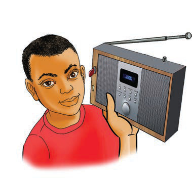

(a)
Kielelezo namba 2(a) kinaonesha msichana akinusa ua kwa kutumia pua yake.
(b)
Kielelezo namba 2(b) kinaonesha mvulana akisoma kitabu kwa kutumia macho yake.
(c)

Kielelezo namba 2(c) kinaonesha mtoto akisikiliza redio kwa kutumia masikio yake.Kielelezo namba 2: Matumizi ya milango ya fahamu
Kielelezo namba 2, kinaonesha kazi mbalimbali za milango ya fahamu.Kazi za milango ya fahamu zimefafanuliwa kama ifuatavyo:
Macho
Macho hutumika kuona na kutambua vitu.Macho yapo sehemu ya mbele ya uso.Macho hushikiliwa katika sehemu yake kwa misuli.Misuli hii hulifanya jicho liwe na uwezo wa kutazama pande mbalimbali.